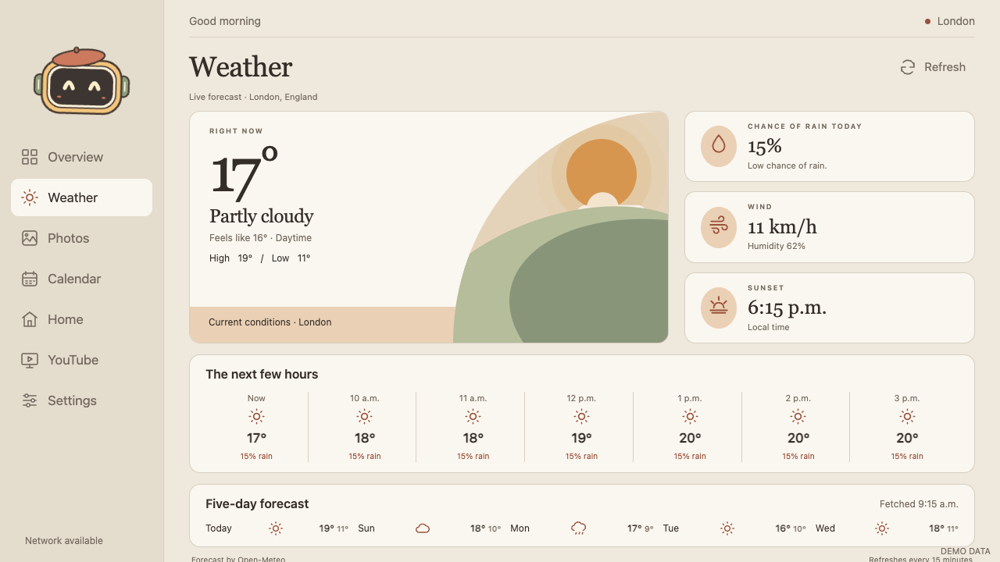
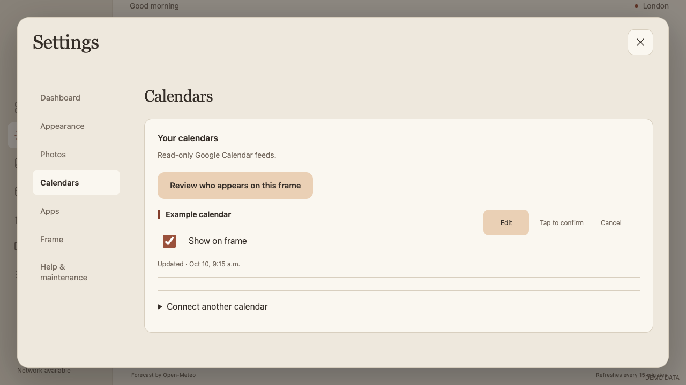
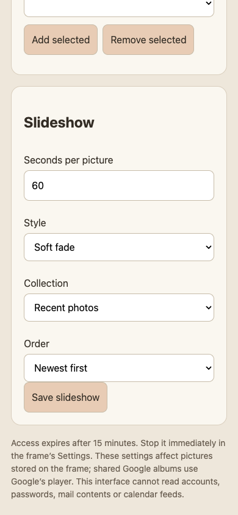
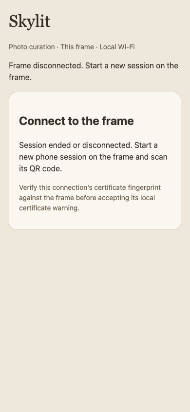

SKYLIT · OCTOBER 13, 2026
React recovery & state ownership
The review’s failure cases now have explicit recovery paths and regression checks. All images below use synthetic data.
What changed
- Weather/cache data is validated before publishing. Malformed input cannot destroy Weather or its dashboard widget. Feature boundaries offer retry and recover on new data.
- Phone slideshow drafts survive photo actions and server refreshes. Saving an earlier revision cannot erase newer edits.
- Phone sessions clear displayed photos and forms on expiry or disconnection. Native remaining time supplies the deadline; late responses cannot restore expired content.
- Calendar removal can be cancelled and resets on navigation or closing Settings.
- Typed page and service contracts, separated phone form components, and consistent formatting make state ownership explicit.
- CI now installs pinned dependencies, type-checks, formats, builds, checks bundle drift and runs React browser regressions.
Weather after recovery
The test publishes an incomplete forecast, then a valid forecast. Both Weather surfaces remain recoverable.

A confirmation with a defined lifetime
Cancel is explicit. Leaving Calendars or closing Settings resets the armed removal action.

Phone state stays coherent

The 60-second draft survives an unrelated Keep action.
Server closure removes photos and editing controls.Verification and limits
89 Node tests, 19 Python tests, TypeScript, formatting, frontend build, React integration/recovery checks and 13 Settings workflow groups passed. All top-level screens passed checks at 1280×720, 1600×1000 and 1920×1080 CSS pixels, including photo browse/zoom/exclusion behavior. The Settings suite also covers a narrow viewport.
The signed APK was rebuilt and signature-verified. The configured wireless and USB frame transports were unavailable; no device installation or physical acceptance is claimed. The hybrid controllers remain, with explicit typed rendering boundaries rather than a second persistence path.